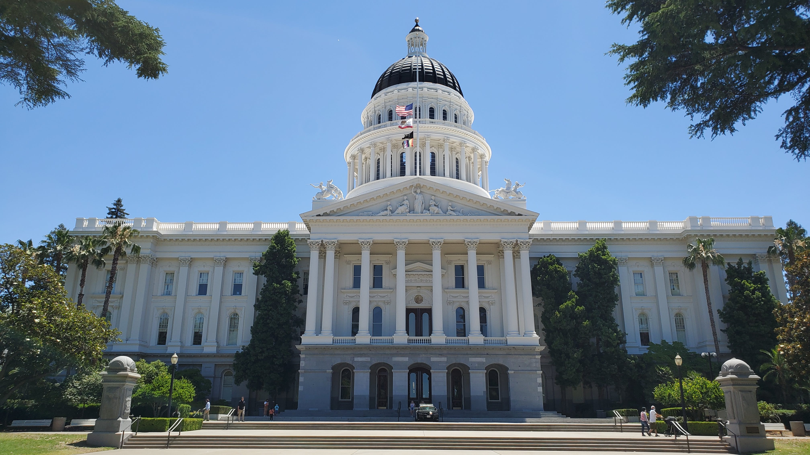

| Population: | 528,001 as of 2022 | ||
|---|---|---|---|
| Year Incorporated: | 1850 | ||
| Region: | Greater Sacramento straddles the Central Valley and Sierra Nevada Mountains | ||
| Development classification: | Urban | ||
| Avg income level compared to rest of state: | Sacramento's average income is $75,311 compared to state avg income of $84,907 |